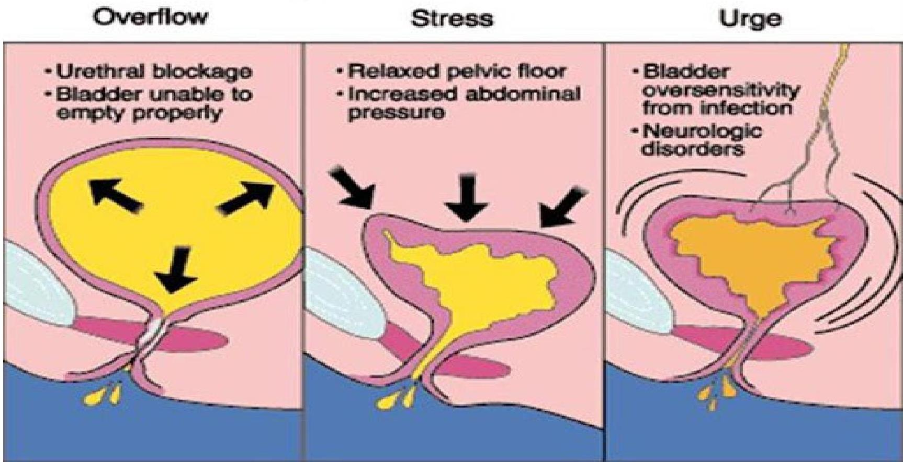

🚽
Topic 05
Incontinence & Acute Cystitis
01
Common Terminologies & Incontinence
Definitions
- Hesitancy
- Delay in initiating urine stream.
- Intermittency
- Describes urinary stream that is not continuous.
- Incontinence
- Involuntary loss of urine.
Types of Incontinence
-
Stress Incontinence: Results from pelvic relaxation or damage of the urinary sphincter. Any physical activity (coughing, laughing, sneezing, heavy lifting) puts pressure on bladder causing urine leak.
-
Functional Incontinence: Occurs when there is a non-medical reason for the incontinence (e.g., inability to move from one place to another/cannot reach the toilet).
-
Overflow Incontinence: Caused by blockage in urethra (e.g., enlarged prostate). Only little urine is released with no sensation of bladder fullness.
-
Urge Incontinence: Due to overactive bladder muscles squeezing so hard, resulting in the majority of incontinence problems in seniors.
Overall Causes of Incontinence
- Urethral blockage
- Bladder unable to empty properly
- Relaxed pelvic floor
- Increased abdominal pressure
- Bladder oversensitivity from infection
- Neurologic disorders

Fig. 5.1: Types of Urinary Incontinence
02
Acute Cystitis
Cystitis is an infection of the bladder and urethra that affects mainly women and girls of 2 years of age.
Etiology (Causative Pathogens)
- Escherichia Coli: Pathogen in 70-95% of cases.
- Proteus mirabilis
- Enterococcus
- Klebsiella spp.
- Staphylococcus saprophyticus (in young women)
Clinical Features & Differential Diagnosis
- Pain on urination and pollakiuria (passing small quantities frequently).
- In children: Crying when passing urine.
- No fever and no flank pain (Important to rule out Pyelonephritis).
- No systemic signs in children.
Diagnosis
- Urine Dipstick: Check for nitrates (indicate enterobacteria) and leukocytes (indicate inflammation).
- Microscopy/Culture: To identify causative pathogen.
- Note: Where urinary schistosomiasis is endemic, consider it in patients with macroscopic or microscopic haematuria.
Treatment Protocols
Cystitis in Girls (2 years or above)
- Cefixime: p.o. 8mg/kg once daily x 3 days
- OR Amoxicillin/Clavulanic acid: p.o. 45-50mg/kg/day in two divided doses x 3 days
Cystitis in Non-Pregnant Women
If dipstick is positive for nitrates and leukocytes:
- Ciprofloxacin: p.o. 500mg/day in two divided doses x 3 days
- OR Nitrofurantoin: p.o. 300mg/day in 3 divided doses
Note: Symptoms may persist for 2-3 days despite adequate treatment. In event of treatment failure or recurrent cystitis (>3-4 episodes/year), Ciprofloxacin 1gm/day in divided doses x 5 days may be used.
Recurrent Cystitis? Consider these:
- Bladder stones
- Urinary schistosomiasis
- Urinary tuberculosis
- Gonorrhoea (Examine partner)
Knowledge Check
Test Your Understanding
Complete this quiz to assess your comprehension of Incontinence & Cystitis.
Loading quiz...